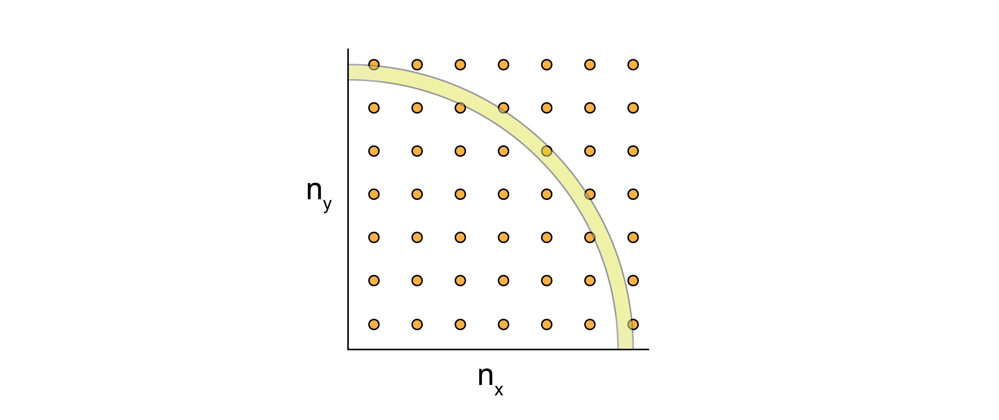

The ideal gas partition function#
Additional Readings for the Enthusiast#
Chandler [1] Chapter 4 (intro), 4.4-4.7
Goals for today’s lecture#
How do independent subsystems impact our formulation of the partition function?
How can we account for indistinguishable subsystems in the partition function?
What is the characteristic length scale for treating a system classically?
Factorization of the partition function#
In the last lecture, we derived expressions for generalized partition functions and related connections to macroscopic thermodynamic potentials. We specifically paid attention to four key ensembles: the microcanonical ensemble (our starting point for all further derivations), the canonical ensemble, the grand canonical ensemble, and the isothermal-isobaric ensemble. These are the four most common ensembles used in statistical mechanics. To date, we have considered partition functions describing all states for an entire system of interest.
However, often times we will be able to divide the system into multiple independent subsystems (indeed, we did this for the polymer adsorption example), perhaps even independent particles, suggesting that we may want a relationship between the properties of an entire system and the properties of a subsystem. Two subsystems are independent if the microstate of one subsystem does not depend on the microstate of another - this requires that the subsystems non-interacting so that positions and energies are uncorrelated. We will thus introduce a method for relating a system partition function to subsystem partition functions.
Consider a system for which we can break the energy into two parts (i.e., into the energies of two subsystems, for example, or two different sources of energy) such that we can write in general
The superscripts in this case indicate the energies of subsystems 1 and 2, and we partition the total system energy between them; this is similar to the partitioning of energy between the system of interest and the bulk reservoir that we used to derive the canonical partition function in previous lectures.
The energy of a single configuration, \(j\), of the combined system is then \(E_j = \epsilon^{(1)}_n + \epsilon^{(2)}_m\), where the label \(j\) identifies a particular configuration of the combined system and \(n\) and \(m\) denote specific configurations of the two subsystems. We assume that \(n\) and \(m\) are independent of each other since the subsystems themselves are independent. Rather than enumerating all possible microstates by summing over all \(j\), we can thus instead enumerate all possible microstates by summing over all possible values of \(n\) and \(m\) independently. The corresponding canonical partition function for the combined system is then:
If the indices \(n\) and \(m\) are independent of each other, we can now further write:
Expressing the sum over all possible indices as a product of sums over single indices is the key to this method - because \(E\) can be decomposed into the sum of two independent values, the product of the two summations yields all possible values of \(E\). You can demonstrate this manually by assuming a two-state energy system per subsystem, for example, and counting the possible products.
Could we do this factorization if \(n\) and \(m\) were not independent?
Click for answer
This factorization is only possible because the two subsystem energies, $\epsilon^{(1)}$ and $\epsilon^{(2)}$ are independent and uncorrelated - if either energy were a function of the other (i.e. if $n$ and $m$ were not independent), then the same factorization would not be possible.Since each of the independent sums takes the same form as the canonical partition function, we use \(Z^{(1)}\) to refer to the partition function for subsystem 1, etc. Again, note that we write these as sums over particular microstates of the system and microstates of the subsystem, so there could be many possible microstates with the same decomposition of energies but with different particle configurations.
Extending this result, if we break the system into \(N\) independent, uncorrelated subsystems then the partition function can be written as:
In principle, each of the \(N\) partition functions for the subsystems could be distinct, because each subsystem could represent a collection of particles giving rise to distinct possible energies. If, however, we have a system of completely identical, independent subsystems (e.g. each subsystem could represent a single particle), then the partition function for each subsystem is identical and the partition function of the combined system becomes:
To simplify this notation, we will define \(Z^{(1)} \equiv z\) as the single-subsystem partition function. This factorization dramatically simplifies our calculation of a system partition function - for example, if we had a system with 100,000 independent molecules (e.g., ideal gas molecules), and each molecule can exist in three different microstates, then the total number of states in the entire system is \(3^{100,000}\), which is much too large to calculate. Eq. (19) instead says that we only need an expression for the three-state partition function \(z\) which is trivial. Again, we assume that each subsystem is independent and identical - so this implies that each subsystem has exactly the same partition function associated with it (same possible energies, same degeneracy for each energy, etc.).
In the preceding definition we have applied a distinct label to each of the \(N\) different single-subsystem partition functions, implying that each molecule is distinguishable. As we discussed in the derivation of the microcanonical ensemble, however, in most systems of independent particles the particles are instead indistinguishable.
Identifying distinguishable vs. indistinguishable subsystems can be confusing, but the idea here is that particles/subsystems are distinguishable if we can uniquely identify the subsystem if it were randomly selected.
Is a monomer within a polymer distinguishable or indistinguishable?
Click for answer
Distinguishable. Each monomer in a polymer is distinguishable because we can identify exactly where in the polymer chain it is (i.e. its if the first, second, third, etc. monomer).Is a molecule within an ideal gas distinguishable or indistinguishable?
Click for answer
Indistinguishable. Each molecule in an ideal gas is indistinguishable.Over-counting in the partition function#

Let’s consider our particles on this lattice. Suppose I have set up my system to place particle 1 on lattice site 1 and particle 2 on lattice site 2. How is this different from placing particle 1 on lattice site 2 and particle 2 on lattice site 1?
Click for answer
It isn't. Because particles 1 and 2 are indistinguishable, these two snapshots are also indistinguishable.If each subsystem (here, the particles) of a combined system is indistinguishable, when we arbitrarily assign labels to each particle, the corresponding microstates are still indistinguishable, and thus each set of configurations should only be counted once in the system partition function.
To avoid overcounting states associated with indistinguishable subsystems (here, the particles), we recognize from the discussion of the microcanonical ensemble that there are \(N!\) possible ways to assign energies \(\epsilon_i\), \(\epsilon_j\), etc. to the \(N\) subsystems, where \(E = \sum_i \epsilon_i\). So for a particular value of \(E\) we have counted \(N!\) states when we should have counted only 1. If we imagine counting our partition function by summing over energy levels, then the degeneracy of each energy level is overcounted by this amount. More specifically, each possible way of assigning these states is the same for indistinguishable subsystems, so we overcount the degeneracy of each energy level in the combined system partition function by a factor of \(N!\).
Dividing by this factor of \(N!\) gives a final expression for the partition function of a system of \(N\) independent, indistinguishable subsystems as:
Finally, we can note that \(\epsilon\) itself may be divided into a series of individual components - for example, we can imagine a single particle as having a component of its energy related to its kinetic energy or its potential energy. Writing \(\epsilon = \epsilon_a + \epsilon_b + \epsilon_c \dots\) allows us to immediately write for the system partition function:
where \(z_a\) are single-subsystem partition functions containing only the energetic term of the subdivision. The only important point to note here is that typically the different energetic components of the single-subsystem energy are distinguishable (i.e. kinetic energy and potential energy) and thus the factorial in the denominator does not change.
To summarize, we thus obtain:
The ideal gas partition function#
We will now use these previous relations to now derive the partition function for a monatomic ideal gas with \(N\) particles as a exemplary case of a many-body non-interacting system and show that we can recover results expected from classical thermodynamics. The basic steps for identifying thermodynamic properties of the system will be the following:
Determine a single-particle energy and corresponding single-particle partition function
Write a partition function for the entire system using the single-particle partition function
Derive thermodynamic quantities via derivatives of the partition function
We will start by performing this derivation in the canonical ensemble. We assume a volume of monatomic gas contained with a cubic box of length \(L\), such that \(V=L^3\). Each particle has an associated partition function \(z = \sum_j e^{-\beta \epsilon_j}\).
Because the system is ideal and each molecule is only a single atom (and hence there are no degrees of freedom associated with molecular vibrations, etc), the energy of each particle is given from the solution to the quantum particle in a box, which is a generalization of a result stated in an earlier lecture. A quantum particle in a box has a discrete spectrum of energies corresponding to the possible positions (or, more accurately, probability distributions associated with specific positions, which are equivalent to the square of the wavefunction). The energy is given as:
Here, \(h\) is the Planck constant, \(m\) is the mass of the particle, and \(n_x\), \(n_y\), and \(n_z\) are three unitless quantum numbers that specify a particular quantum state in a 3D box. Recall that in quantum mechanics energies are discretized, such that the three quantum numbers above specify discrete values of the energy, \(\epsilon_{\nu}\), and also contribute to the degeneracy, \(\omega_{\nu}\) (written in lower case to indicate a single-particle degeneracy). Since particle positions are associated with different energies, the degeneracy of each energy level is specified only by the number of possible ways of assigning quantum numbers to yield that energy.
To proceed, we would like to calculate the single particle partition function. We write the partition function by summing over all possble values of the energy, \(\epsilon_{\nu}\):
The prefactor \(w_{\nu}\) is the degeneracy of a given energy level, \(\epsilon_{\nu}\). We can start by computing an expression for the degeneracy by picturing a three-dimensional grid of quantum numbers in a coordinate system defined by \(n_x\geq 0\), \(n_y\geq 0\), and \(n_z\geq 0\), where each point in this space is a single possible molecular quantum state corresponding to some energy value \(\epsilon_{\nu}\).
The equation
then defines the equation for a sphere of radius \(R^2\) in the \(n_xn_yn_z\) space, where the expression for \(R\) is from the rearrangement of Eq. (20). In 2D, this would look like:

We can quantify the number of possible microstates as the volume of the sphere for which all three quantum numbers are positive, or \(\frac{\pi R^3}{6}\). We can write this phase-space volume as:
Note that \(V=L^3\) is the volume of the physical system, while \(R^3\) defines the volume of the phase space. What we really want is an expression for the degeneracy of a particular energy level \(\epsilon_{\nu}\) - this can then be approximated as the number of states with an energy between \(\epsilon_{\nu}\) and \(\epsilon_{\nu} + \Delta\epsilon_{\nu}\):
We now assume the difference in energy \(\Delta \epsilon_{\nu}\) is extremely small, such that \(\Delta \epsilon_{\nu} \rightarrow d\epsilon_{\nu}\). This approximation then gives us the volume of an extremely thin shell of phase space, and therefore is a reasonable approximation for the number of states on the surface of our sphere. We can thus approximate the degeneracy as:
Substituting this expression into our partition function gives:
Ideal gas partition function in the classical limit#
The previous expression has now assumed that the quantum numbers are effectively continuous in space. To simplify this expression further, we further assume that the sum over all energies can be converted to an integral because the differences in the energy between states, \(\Delta \epsilon\), is much smaller than \(k_BT\), such that the energy states are also effectively continuous (which is consistent with the assumption that quantum numbers are continuous).
Converting a sum to an integral is equivalent to what we did when discussing Stirling’s approximation - we can think of the sum over energies as performing rectangular integration of the energy vs. \(\nu\), and as the difference between consecutive terms in the sum becomes small, rectangular integration can be well-approximated using a continuous integral.
- classical limit#
The assumption that energies are continuous in a macroscopic system; requires that incrementing the quantum numbers by one leads to a very small change in the energy (\(\approx 10^{-9} k_B T\)).
In the classical limit the partition function becomes:
Simplifying yields our final expression for the single-particle partition function for the ideal gas:
\(z = \left( \frac{2\pi m k_BT}{h^2}\right )^{3/2} V\)
Hints
We can analytically solve this expression by defining \(u = \beta\epsilon_{\nu}\) and recognizing the standard integral \(\int_0^\infty u^{1/2}e^{-u} du = \sqrt{\pi}/2\).
Show derivation
Finally, we write the full partition function of the system, remembering that the particles are indistinguishable, as:
In the last line, we define:
where \(\lambda\) is the thermal de Broglie wavelength which has units of length and is a function of \(T\); this simplifies our notation and defines a characteristic length scale for treating a gas classically - if \(V \gg \lambda^3\), which we will generally assume to be the case, then the classical limit is reasonable.
Thermodynamic relationships of the ideal gas partition function#
We have now performed the first two steps in our approach by identifying an expression for the energy of a microstate of our system and calculating the corresponding partition function (in the classical limit) from the single-particle partition function. We can next derive thermodynamic relationships using the connection between the canonical partition function and the Helmholtz free energy.
Let us first calculate the ensemble-average pressure of an ideal gas:
Show that \(PV=NRT\), where \(R=N_Ak_B\).
Show derivation
This expression for the pressure is the familiar ideal gas equation of state, derived solely from statistical mechanics. Note that \(R\), the ideal gas constant, is related to \(k_B\) by a constant factor of Avogadro’s constant, \(N_A\), or \(R = N_A k_B\). Basically, this is just a unit conversion. The only input to obtain this relationship is an energy function from quantum mechanics - therefore this is entirely a first-principles derivation that does not rely on empirical measurements. In the third line we divided the partition function into a term that is a function of \(V\) and one that is not; the second term does not contribute to the expression for \(P\).
We can next calculate the average energy of an ideal gas.
Show that internal energy \(E = \frac{3 N k_BT}{2}\).
Hints
Recall that we can relate the energy to the canonical partition function (from a previous lecture) via:
Show derivation
We write out the partition function and separate into the temperature-dependent and temperature-independent terms:
Taking the derivative gives:
This again is a familiar expression - the internal energy of an ideal gas depends only on the temperature, and we obtain the same prefactors as in thermodynamics.
We can now easily also calculate the heat capacity at constant volume, \(C_V\):
These last two results are manifestations of the
- equipartition theorem#
any degree of freedom that appears quadratically in the energy of a system contributes \(1/2 k_BT\) to the internal energy and contributes \(1/2 k_B\) to the heat capacity in the classical limit
Here, there are 3 translational degrees of freedom corresponding to the three quantum numbers that each contribute a quadratic energy term (the kinetic energy) for each of the \(N\) atoms, leading to \(\frac{3 }{2}N k_B\) for the heat capacity as we found.
Finally, we can compute the chemical potential of an ideal gas using the ideal gas partition function:
Show that \(\mu = \mu_0(T) + k_B T \ln \rho\).
Hints
Show derivation
The last formula expresses the chemical potential in terms of a first term, which is temperature dependent but concentration (\(\rho\)) independent, and then a second concentration-dependent term. This form for the chemical potential is again exactly what is observed for ideal gases in classical thermodynamics.